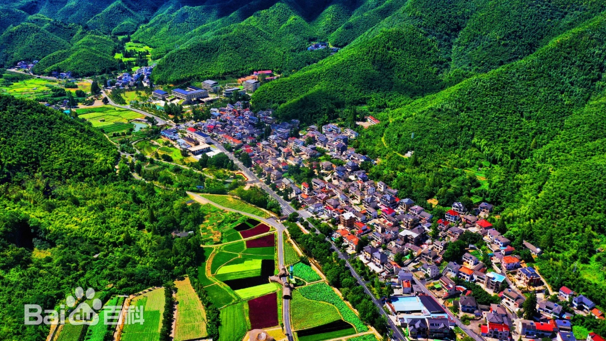
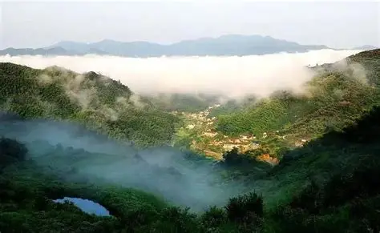
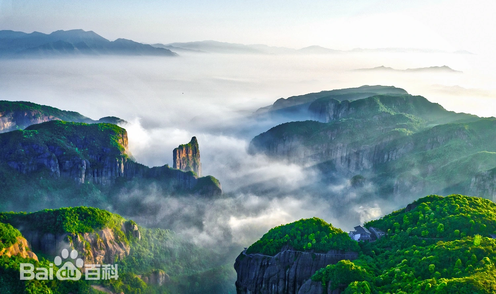

"两山理念"产业转型线
路线概述
"两山理念"产业转型线是一条聚焦生态文明建设和绿色发展的研学路线，通过实地考察湖州安吉、绍兴嵊州和台州仙居三个代表性地区，深入了解浙江省在"绿水青山就是金山银山"理念指导下的产业转型升级实践。
本路线将带领学员亲身体验从传统资源开发到生态经济发展的转变历程，探索绿色发展模式，培养生态文明意识。
行程天数
3天2夜
途经地区
湖州 → 绍兴 → 台州
适合人群
中学生、大学生、企业团队
主题特色
生态转型、绿色发展、产业升级
余村村地处天目山北麓，三面环山，一条小溪从村中流过，属北亚热带季风气候区，季风显著、四季分明；雨热同季、降水充沛。余村村先后被评为全国生态文化村、全国美丽宜居示范村，获全国文明村、全国民主法治示范村、联合国世界旅游组织最佳旅游乡村、全国乡村旅游重点村、全国乡村治理示范村等众多荣誉称号。
安吉余村是"两山理念"的发源地，这里见证了从"卖石头"到"卖生态"的转型历程。学员们将参观矿山复绿公园、竹产业科技馆，深入了解绿色发展的实践路径。
余村曾是依靠矿山开采和水泥产业发展的村庄，生态环境遭到严重破坏。在"两山理念"指导下，余村关停矿山和水泥厂，大力发展生态旅游和竹产业，实现了从"石头经济"到"生态经济"的华丽转身。

互动体验
生态价值核算模拟
参与"生态价值核算"模拟活动，学习量化森林碳汇、水资源等生态资产的方法，了解生态系统服务的价值评估。
竹制品环保DIY
体验竹制品环保DIY，用可再生竹材制作生活用品，了解竹材的特性和可持续利用方式。
黄泽镇是现代农业发展的典范，学员们将探访现代农业产业园，考察茶叶、果蔬等农产品的绿色供应链，了解"农业全产业链"绿色发展模式。
黄泽镇通过科技创新和绿色发展理念，实现了农业生产与生态保护的协调发展，形成了从种植、加工到销售的完整绿色产业链，为乡村振兴提供了可复制的样板。 以“美景、美食、美人”的“三美”为主线，紧扣四明山资源、民间特色美食、手工匠人等资源，探索开展全域旅游工作。以打造“十里水果”长廊为抓手，串联京采农业、唐溪草庐、明山茶场等旅游点，同时积极打造村级网红打卡点建设， 结合中国嵊州小吃城来吸引人气；并邀请社会资本参与民宿开发，提升旅游服务水平。将黄泽打造成宜居、宜业、宜游的休闲之地。

互动体验
绿色农产品检测
参与绿色农产品检测实操，使用简易仪器检测农药残留，学习农产品质量安全控制方法。
电商助农直播模拟
模拟"电商助农"直播，推广生态农产品并讲解绿色种植理念，体验数字化营销在农业转型中的应用。
神仙居又称韦羌山，属括苍山系，主峰大青岗，海拔1271米。整个神仙居景区以西罨幽谷为中心，形成峰、崖、溪、瀑景观，峰崖的相对高差多在100米以上，属于典型的流纹岩地貌。 神仙居景区地质构造上隶属华南古板块，是火山喷发后留下的古老遗迹，是世界上最大的火山流纹岩地貌集群。景区植被则以针叶林为主，其森林植物群落处于前期演替阶段，植被退化程度较高。
神仙居景区是生态旅游与保护协同发展的典范，学员们将调研景区生态修复、低碳运营（如新能源观光车、雨水回收系统）等举措，了解旅游业绿色发展模式。 神仙居景区在开发过程中始终坚持生态优先原则，通过科学规划和精细管理，实现了旅游发展与生态保护的良性互动，为生态敏感地区的旅游开发提供了宝贵经验。

互动体验
"生态侦探"任务
开展"生态侦探"任务，记录景区低碳设施并分析其环保作用，培养生态观察和分析能力。
"无痕山林"实践
参与"无痕山林"实践，学习户外垃圾打包与生态保护规范，培养环保意识和责任感。